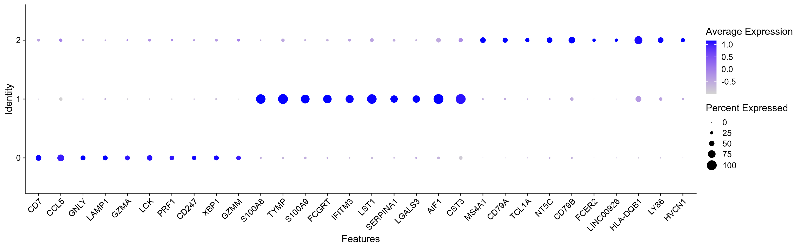

COSG is a cosine similarity-based method for more accurate and scalable marker gene identification.
The method and benchmarking results are described in Dai et al., (2021).
# install.packages('remotes')
remotes::install_github(repo = 'genecell/COSGR')Load the library:
library(COSG)
library(Seurat) marker_cosg<-cosg(
pbmc_small,
groups='all',
assay='RNA',
slot='data',
mu=1,
n_genes_user=2000)Check markers:
head(marker_cosg$names)## 0 1 2
## 1 CD7 S100A8 MS4A1
## 2 CCL5 TYMP CD79A
## 3 GNLY S100A9 TCL1A
## 4 LAMP1 FCGRT NT5C
## 5 GZMA IFITM3 CD79B
## 6 LCK LST1 FCER2Check scores:
head(marker_cosg$scores)## 0 1 2
## 1 0.6391917 0.8954042 0.6922908
## 2 0.6391267 0.8312083 0.5832425
## 3 0.6328148 0.8120045 0.5757478
## 4 0.6164937 0.7755955 0.5533107
## 5 0.5846589 0.7413060 0.5163446
## 6 0.5795238 0.7380483 0.5115180top_list<-c()
for (group in colnames(marker_cosg$names)){
top_i<-marker_cosg$names[group][1:10,1]
top_list<-c(top_list,top_i)
}Expression pattern:
DotPlot(pbmc_small,
assay = 'RNA',
features = unique(top_list)) + RotatedAxis()